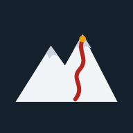

Run Finder
Pick a mountain
On your phone
Installed. Open it from your home screen like any app.
iPhone or iPad: open this page in Safari, then
- tap the Share button (the square with an arrow),
- tap Add to Home Screen, then Add,
- open Run Finder from the home screen once while on Wi-Fi, so it saves the maps.
On a ski morning, open it in the car while there's signal: it picks up the latest conditions and keeps them for the mountain.
Android: in Chrome, tap the ⋮ menu, then Install app (or Add to Home screen).
Open it once on Wi-Fi so it saves the maps. On a ski morning, open it in the car while there's signal: it picks up the latest conditions and keeps them for the mountain.
On a phone, open this page and add it to the home screen. On a computer it works in any browser.
Files
Everything here is a plain static website: the three maps, their terrain images and the conditions files. Nothing is sent back from your phone. Get all the files on GitHub (Code, then Download ZIP) to keep a copy or host it anywhere.